オブジェクトマネージャで項目をクリックした場合も対応するミニツールバーが表示されます。
デフォルトでは、オブジェクトを選択するか、ページ内の特定の重要な領域をクリックすると、ミニツールバーが表示されます。
ミニツールバーを非表示にするには、表示：ミニツールバーメニューのチェックを外します。
ミニツールバーが消えた後にShiftキーを押すとミニツールバーを再び表示できます。
ミニツールバー内の特定のボタンを見つけるには、メインメニューの検索ツール 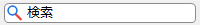 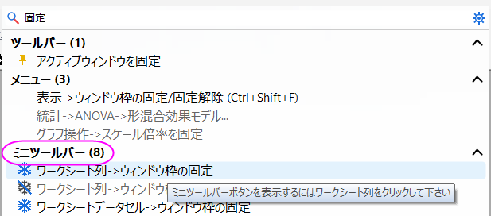
たとえば、ワークシートの行を固定するためのMiniツールバーボタンを探したい場合は、検索ツールに固定 というキーワードを入力します。すると、ミニツールバーセクション内に関連ボタンが一覧表示されます。いずれかの項目にマウスカーソルを合わせると、そのボタンの詳細なヒントが表示されます。
オブジェクトマネージャで項目をクリックした場合も対応するミニツールバーが表示されます。 |
グループ化プロットの場合、グループタブにあるボタンを使って一緒にプロパティ編集が可能です。
| 非グループ化 |
また、単一タブのボタンを使うと1つのプロットプロパティを編集できます。 
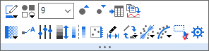
シングルデータポイント

| シンボルの境界色 | シンボルの塗りつぶし色 | ||
| |
プロットのシンボルスタイル | |
シンボルサイズ |
| シンボルサイズを大きく | |
シンボルサイズを小さく | |
| シンボルの透過率 | |
データラベルを表示 | |
| |
レベルの設定 | |
カラーマップを再スケール |
| 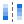 |
カラーマップを反転 | |
プロットをコピー
その後、他のレイヤに新規プロットとして貼り付けます(Ctrl+V)。
|
| 右Y軸にプロット | 左Y軸にプロット | ||
| 範囲を編集... | プロットタイプの変更 | ||
フィット曲線追加
|
|
トレンド線を追加
| |
| 選択可能 | |
データポイントの非表示 | |
| |
作図の詳細を開く |

| 線/境界色 | 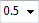 |
線の太さ | |
| |
線を太く | |
線を細く |
| |
データラベルを表示 | |
ソースシートに移動 |
| |
プロットをコピー
その後、他のレイヤに新規プロットとして貼り付けます(Ctrl+V)。
|
範囲を編集... | |
| 右Y軸にプロット | 左Y軸にプロット | ||
| Xソート | プロットタイプの変更 | ||
フィット曲線追加
|
|
トレンド線を追加
| |
| 選択可能 | |
作図の詳細を開く |
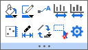 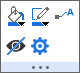
単一棒
| 塗りつぶし | 境界色 | ||
| |
縦棒積み上げ
このボタンをクリックすると、次のリストから積み上げ方法を選択できます。
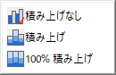 |
|
データラベルを表示 |
| |
間隔を広く | |
間隔を狭く |
| 右Y軸にプロット | 左Y軸にプロット | ||
| 範囲を編集... | プロットタイプの変更 | ||
| 選択可能 | |
データポイントの非表示 | |
| |
作図の詳細を開く |

| 線/境界色 | 塗りつぶし | ||
| 線の太さ | |
作図の詳細を開く | |
| |
線を太く | |
線を細く |
| 右Y軸にプロット | 左Y軸にプロット | ||
| 範囲を編集... | プロットタイプの変更 | ||
| 選択可能 | |
作図の詳細を開く |
ボックスチャートのデータ形式：
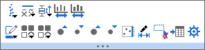
区間プロット

| ボックスの形状
このボタンをクリックすると、次のリストからボックスの形状を選択できます。
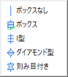 |
ボックスの種類
このボタンをクリックすると、次のリストからボックスの種類を選択できます。
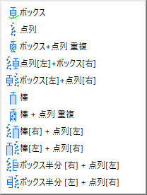 | ||
| ボックスの線
このボタンをクリックすると、グラフに表示するボックスの線を設定できます。
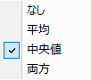 |
ボックスとヒゲ
このボタンをクリックすると、ボックスとヒゲを編集できます。
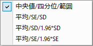 区間プロットの場合、このドロップダウンリストを使用できます。
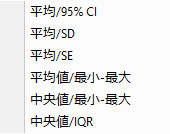 | ||
| 間隔を広く | |
間隔を狭く | |
| |
塗りつぶし | 境界色 | |
| プロットシンボル(ボックスの種類=データの場合)/パーセンタイルシンボル | / | 右/左Y軸にプロット | |
| 範囲を編集... | 選択可能 | ||
| |
ソースシートに移動 | |
作図の詳細を開く |
| |
塗りつぶし | 境界色 | |
| |
ビンの数＋1 | |
ビンの数-1 |
| ビン設定 | 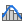 |
曲線の種類 | |
| 間隔を広く | |
間隔を狭く | |
| |
データラベルを表示 | |
ソースシートに移動 |
| 右Y軸にプロット | 左Y軸にプロット | ||
| 範囲を編集... | 選択可能 | ||
| |
作図の詳細を開く |

グループ化/積み上げドットプロット
| グループタブ | 単一タブ | ||

|

|
| |
シンボルの境界色 | |
シンボル塗りつぶし色 |
| |
ドロップダウンリストからシンボル形状を変更します。 | ||
| シンボルサイズを大きくすると、それに応じてビンのサイズ/番号が変更されます。 | |
シンボルサイズを小さくすると、それに応じてビンのサイズ/番号が変更されます。 | |
| 範囲を編集 | クリックして現在のプロットを選択不可にします。 | ||
| |
ソースワークシートに移動します。 | |
作図の詳細ダイアログを開きます。 |
| |
塗りつぶし | 境界色 | |
| 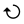 |
円グラフを時計回りにする | |
円グラフプロットを反時計回りにする |
| |
データラベルを表示 | ドーナツ表示 | |
| ドーナツホールを大きく | ドーナツホールを小さく | ||
| 範囲を編集... | 選択可能 | ||
| 抜き出し | |
データポイントの非表示 | |
| |
作図の詳細を開く |

| 線/境界色 | 線の太さ | ||
| |
線を太く | |
線を細く |
| |
データラベルを表示 | 範囲を編集... | |
| |
角度を+15 | 角度を-15 | |
| 長さを+10 | |
長さを-10 | |
| 選択可能 | |
作図の詳細を開く |
等高線図

ヒートマップ

分割タイルヒートマップ

| |
主レベル +1 | |
主レベル -1 |
| |
レベルの設定 | |
カラーマップを再スケール |
| |
パレット
ボタンをクリックしてドロップダウンリストからパレットを選択 |
カラーマップを反転 | |
| ソースシートに移動 | |
プロットをコピー
その後、他のレイヤに新規プロットとして貼り付けます(Ctrl+V)。 | |
| 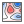 |
等高線図のスタイル | セルの境界線を有効にする（ヒートマップのみ）
Note: このボタンをクリックすると、
| |
| |
境界を太く | |
境界を細く |
| |
等高線ラベル／データラベルの表示 | 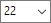 |
ラベルのフォントサイズ |
| |
フォントサイズを大きく | フォントサイズを小さく | |
| ラベルの再配置 | |
最小値と最大値に注釈を付ける
最大と最小のZ値のデータポイントに注釈を付けます。 | |
| |
データポイントを抽出
このボタンをクリックすると、ダイアログを開いて抽出するデータポイントを指定できます。 |
範囲の編集（ヒートマップのみ） | |
| 選択可能 | |
作図の詳細を開く |
2Dエラーバー：

3Dエラーバー：

| 線/境界色 | 線の太さ | ||
| |
線を太く | |
線を細く |
| 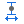 |
キャップの幅を広く | 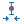 |
キャップの幅の狭く |
| 色付き面積 | |
塗りつぶし
色付き面積を選択した場合、このボタンでエラーバーの塗りつぶし面積をカスタマイズできます。 | |
| Yエラーバーの方向 | Xエラーバーの方向 | ||
| 範囲を編集... | ３Dエラーバーのキャップ線： | ||
| 選択可能 | |
作図の詳細を開く |
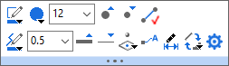
シングルデータポイント

| シンボルの境界色 | 3Dシンボル | ||
| シンボルサイズを大きく | |
シンボルサイズを小さく | |
| |
シンボルサイズ | |
シンボル間の接続線を有効にする |
| 接続線の色 | 接続線の太さ | ||
| |
接続線を太く | |
接続線を細く |
| 次の平面で投影を有効にする： | |
データラベルを表示 | |
| 範囲を編集... | プロットタイプの変更 | ||
| |
作図の詳細を開く |
| 塗りつぶし | 境界色 | ||
| 棒の形状： | |
データラベルを表示 | |
| |
間隔を広く | |
間隔を狭く |
| プロットタイプの変更 | 範囲を編集... | ||
| |
縦棒積み上げ
このボタンをクリックすると、次のリストから積み上げ方法を選択できます。
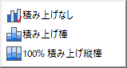 |
|
作図の詳細を開く |
グラフ内のプロット

単一の棒

| グラフ内の複数プロット 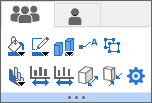 |

|
| 塗りつぶし | 境界色 | ||
| 棒の形状： | |
データラベルを表示 | |
| プロットタイプの変更 | |
縦棒積み上げ
このボタンをクリックすると、次のリストから積み上げ方法を選択できます。
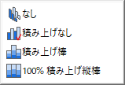 | |
| |
間隔を+ 5% | |
間隔を- 5% |
| Z方向に棒幅を広く | Z方向に棒幅を狭く | ||
| 範囲を編集... | |
作図の詳細を開く |
3Dリボン&ウォールグラフの単一プロット

3Dリボンの複数プロット 
|
3Dウォールの複数プロット 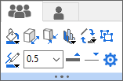 |
| |
塗りつぶし | ||
| アウトライン幅 + 5% | アウトライン幅 - 5% | ||
| |
縦棒積み上げ
このボタンをクリックすると、次のリストから積み上げ方法を選択できます。
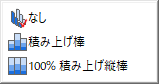 |
プロットタイプの変更 | |
| 境界線の色 | 境界線の太さ | ||
| |
境界線を太く | |
境界線を細く |
| 範囲を編集... | |
作図の詳細を開く |
| |
主レベル +1 | |
主レベル -1 |
| |
レベルの設定 | |
カラーマップを再スケール |
| |
パレット
クリックしてドロップダウンリストからパレットを選択 |
カラーマップを反転 | |
| |
メッシュ線を有効にする | プロットタイプの変更 | |
| |
作図の詳細を開く |
解析結果の出力プロットにパラメータを変更ボタンが表示されます。
| パラメータの変更 |
| |
軸スケール | 軸の再スケール | |
| |
グリッド線を表示 | |
軸目盛スタイル |
| 軸目盛を長く | 軸目盛を短く | ||
| 反対側の軸を表示 | 第2軸を追加 | ||
| スケールを反転 | 目盛ラベルを表示 | ||
| |
参照線を追加 | 軸破断を追加 | |
| |
フォーマットを適用...
このオブジェクトのフォーマットをこのタイプの他のオブジェクトに適用する
|
軸ダイアログを開く | |
| |
選択したオブジェクトを非表示 |

参照線をクリックすると、カスタマイズ用に次のミニツールバーが表示されます。
参照線

特に、参照線がフィット曲線/トレンド線である場合（フィット曲線ボタンまたはトレンド線ボタン で散布図または折れ線プロットに追加可能）、その線を選択すると、次のミニツールバーがポップアップ表示されます。
で散布図または折れ線プロットに追加可能）、その線を選択すると、次のミニツールバーがポップアップ表示されます。
フィット曲線/トレンド線

| 線の色を指定します。 | 線幅をpt単位で選択または入力します。 | ||
| |
線を太く | |
線を細く |
| 線種を指定します。 | |
現在の線と選択した参照線の間の領域を塗りつぶすかどうかを指定します。はいの場合は、ドロップダウンリストから塗りつぶす参照線を選択できます。
フィット曲線、トレンド線、軸ダイアログから追加されたその他の参照線、および開始軸と終了軸がドロップダウンにリストアップされることに注意してください。 | |
| |
ラベルを表示
参照値のラベルを追加します。フィット曲線およびトレンド線（トレンドタイプが移動平均に設定されていない場合に使用可能）では、フィット式/トレンド線の方程式およびR二乗値の表示を選択できます。線形フィット線の場合 (トレンドタイプが線形に設定されている場合)、ピアソンのRを表示することもできます。
|
|
ラベル位置
ラベルが追加されたら、ドロップダウンリストから選択して、ラベルの位置を指定するか、ラベルをパネル/レイヤに対して相対的に設定します。 |
| |
選択したフィット曲線/トレンド線を非表示にします。
Note:
|
選択した基準線をデータプロットに戻すには、このボタンをクリックします。 | |
| |
フィット曲線およびトレンド線で使用可能。トレンドタイプを変更します。
|
このボタンをクリックすると、固定パラメータと値を指定するためのパラメータの固定ダイアログがポップアップ表示されます。 | |
| |
トレンドタイプが多項式の場合に利用可能です。次数を2～10の範囲で指定するか、最後の編集ボックスに数値を入力します。
|
|
トレンドタイプが移動平均に設定されている場合に使用できます。移動ウィンドウのポイント数を指定します。値は2～10で、最後の編集ボックスに手動で数値を入力できます。 |
| |
現在の参照線のフォーマット設定をアクティブなレイヤまたはウィンドウの参照線に適用します。 | |
選択した要素の現在のフォーマットを、以降作成される他の参照線のデフォルトとして設定します。 |
| |
参照線ダイアログを開きます。 |
塗りつぶしボタン を選択して参照線間の色を塗りつぶす場合は、塗りつぶし色をクリックすると、カスタマイズ用の次のミニツールバーが表示されます。
を選択して参照線間の色を塗りつぶす場合は、塗りつぶし色をクリックすると、カスタマイズ用の次のミニツールバーが表示されます。
| |
塗りつぶし | スライダをドラッグして透明度を変更します。 | |
| 開始の行を表示 | 終了の行を表示 | ||
| |
塗りつぶしをデータプロットの前に表示します。 | |
参照線ダイアログを開きます。 |
レイヤフレームのスペースをクリックして、グラフレイヤのミニツールバーを表示させます。

複数のレイヤが選択されている場合：

| |
再スケール | |
レイヤ枠
レイヤ枠を非表示/表示 |
| 軸の配置 | レイヤの背景色 | ||
| |
他のレイヤを非表示 | |
統計参照線を追加 |
| |
凡例 | |
同じ線形スケール範囲に対して、ピクセル単位で同じ長さになるようにXY軸スケールを設定します。 |
| |
レイヤタイトルの追加 | |
プロットの追加 |
| |
枠でプロットを切り取る | ダイアログを開く | |
| 自動再スケール | 選択可能 | ||
| データプロットを表示
レイヤ内のデータプロットを表示/非表示 |
|
フォーマットを適用... | |
| |
選択したオブジェクトを非表示にします。 | 軸目盛スタイル | |
| |
選択したレイヤーを整列します。複数のレイヤが選択されている場合にのみ使用できます。
|
|
選択したレイヤの位置を入れ替えます。2つのレイヤが選択されている場合にのみ使用できます。 |
| 選択したレイヤの高さを統一します。複数のレイヤが選択されている場合にのみ使用できます。 | 選択したレイヤの幅を統一します。複数のレイヤが選択されている場合にのみ使用できます。 |

| クリックしてレイヤフレームのサイズを変更 | クリックしてレイヤフレームを回転 | ||
| |
再スケール | |
平面の表示/非表示： |
| 次の平面にグリッド線を表示 | |
プロットの追加 | |
| レイヤ内のデータプロットを表示/非表示 | 軸目盛とラベルの方向： | ||
| |
フレームを表示/非表示 | 自動再スケール | |
| |
レイヤタイトルの追加 | ダイアログを開く |
カーソルをページの端に移動し、カーソルがに変わったら、グラフページの端または外側にある灰色の領域をクリックします。ミニツールバーが開きます。
2D（グラフ内の複数のレイヤ）

| |
グラフスタイル
このボタンをクリックしてTheme Previewアプリを開きます。 |
鍵前アイコンを表示
再計算アイコンを表示 | |
| |
ダイアログを開かずにPowerPointにグラフを送信します。
次の設定で送信：
|
|
ダイアログを開かずにWordにグラフを送信します。
次の設定で送信：
|
| 解析マーカーの表示/非表示 | |
グリッドを表示 | |
| |
グリッド間隔を大きく | グリッド間隔を小さく | |
| |
データポイントまたはデータポイントツールチップの移動 | |
スピードモードバナーを表示/非表示 |
| |
レイヤアイコンの表示/非表示 | レイヤアイコンでのみアクティブレイヤを設定 | |
| |
アクティブレイヤのみ表示 | 軸アイコンの表示/非表示 | |
| |
アクティブレイヤ標識を表示 | |
画像としてグラフをコピーする... |
| ページタイトルの追加 | |
ドロップダウンリストから選択して、現在のグラフからマスクされたデータポイントを非表示または表示します。グラフ内のデータがマスクされている場合にのみ使用可能です。
| |
| |
密データモード
データプロットを画像としてキャッシュしてラベルなどをすばやく変更できるようにします。 リフレッシュして画像を更新します。 |
|
ウィンドウビュー |
| |
ページへの中央レイヤ | ページにレイヤサイズを合わせる
ボタンをクリックして、「ページにレイヤサイズを合わせる」ダイアログを開きます | |
| |
ブラウザグラフの列入れ替え | |
ブラウザグラフのシート/ブック入れ替え |
| |
レイヤ配置
このボタンをレイヤ配置ダイアログを開きます。 |
|
マウスオーバー時にプロットをハイライトする |
| データスライサー
データスライサーをグラフに追加するには、このボタンをクリックします。詳細は、こちらをご覧下さい |
|
グラフページのすべてのレイヤのレイヤタイトルにフィルタ条件を追加します。
このボタンはグラフにデータスライサーがある場合に使用できます。 | |
| 以下のプロパティにチェックを入れ、すべてのレイヤに編集を適用します。 | レイヤのラベルを追加 | ||
| 色を反転 | 目盛スタイル | ||
| すべてのレイヤの凡例を表示/非表示 | |
プロパティダイアログを開く |
| 自動再スケール | 画像としてコピー | ||
| |
名前を定義 | ノートを挿入
Note: ワークシートに挿入されるノートは、Originリッチテキストをサポートし、レンダーモードで表示されます。 | |

|
LaTeXの式を挿入 | |
セルの数式またはセルリンクを値に変換 |
| サブメニューから選択して、フォーマット (太字、塗りつぶしの色など)、内容、挿入されたメモ、ワークシート上のすべてをクリアします。 |
カーソルをページの端に移動し、カーソルがに変わったら、ページの端または外側にある灰色の領域をクリックします。ミニツールバーが開きます。

| |
PowerPointに送る
アクティブなレイアウトページをPowerPointに送信する |
|
Wordに送る
アクティブなレイアウトページをWordに送信する |
| 画像としてグラフをコピーする... | グリッドを表示 | ||
| |
スライドビューのオン/オフ（境界の表示なし） | 埋め込みグラフの選択を有効/無効にする | |
| |
プロパティダイアログを開く |

|
フォント設定 | フォントサイズ | |
| |
フォントサイズを大きく | |
フォントサイズを小さく |
| |
フォント色 | 太字 | |
| |
テキストの折り返し
幅を調整して折り返し効果を確認 |
位置合わせ | |
| |
時計回りに回転 | 反時計回りに回転 | |
| |
フォーマットを適用...
このオブジェクトのフォーマットをこのタイプの他のオブジェクトに適用します。 |
|
置換へのリンク |
| 選択可能 | すべてのフォーマットをクリア（選択した1つまたは複数のオブジェクト） | ||
| |
プロパティダイアログを開く |
|
|
フォント設定 | フォントサイズ | |
| |
フォントサイズを大きく | |
フォントサイズを小さく |
| |
フォント色 | |
ボックスの幅 |
| 太字 | |
テキストの折り返し
幅を調整して折り返し効果を確認 | |
| |
時計回りに回転 | 反時計回りに回転 | |
| 位置合わせ | |
フォーマットを適用...
このオブジェクトのフォーマットをこのタイプの他のオブジェクトに適用します。 | |
| |
置換へのリンク | |
プロパティダイアログを開く |
|
|
フォント設定 | フォントサイズ | |
| |
フォントサイズを大きく | |
フォントサイズを小さく |
| |
フォント色 | |
枠 |
| |
凡例を再構成 | |
データプロットの凡例更新モード
|
| |
逆順 | 水平に配置 | |
| |
表示/非表示 | プロットを付ける | |
| |
テキストの折り返し | |
アクティブデータセットの標識 |
| |
選択したオブジェクトを非表示 | |
プロパティダイアログを開く |

| シンボル幅を広く | |
シンボル幅を狭く | |
| シンボルサイズを小さく | |
シンボルサイズを小さく | |
| |
線を太く | |
線を細く |
| パターンブロックの幅を大きく | パターンブロックの幅を小さく | ||
| パターンブロックの高さを大きく | パターンブロックの高さを小さく | ||
| |
プロパティダイアログを開く |
| 両端のレベルを表示する | タイトルの表示 | ||
| |
主レベル +1 | |
主レベル -1 |
| 範囲ラベル | |
小数点以下の桁数 | |
| |
分割レイアウト | 逆順 | |
| 並べ替え | 最大＆最小レベル | ||
| |
プロパティダイアログを開く |
| レベルを追加 | |
レベルを削除 | |
| シンボルの間隔を広く | |
シンボル間隔を狭く | |
| |
レイアウト | 桁数指定法 | |
| バブルのスタイル | タイトルの表示 | ||
| |
プロパティダイアログを開く |
| 線/境界色 | 線の太さ | ||
| |
線を太く | |
線を細く |
| 線種 | |
プロパティダイアログを開く | |
| 始点の矢印の形状 | |
終点の矢印の形状 | |
| 矢印の幅を広く | |
矢印の幅を狭く | |
| 矢印を長く | 矢印を短く | ||
| |
時計回りに回転 | 反時計回りに回転 | |
| |
円弧上の矢印 | |
ポイント編集 |
| |
カギ線矢印の方向 | 内側矢印に変更します。 |
これらを含みます: ポリライン、 曲線、自由曲線、四角形、円、多角形そして閉曲線 オブジェクト
| 線/境界色 | 線の太さ | ||
| |
線を太く | |
線を細く |
| |
塗りつぶし | 透過率 | |
| |
ポイント編集 | |
二等辺台形
(台形オブジェクトの場合) |
| |
最前面へ移す | 後 | |
| 前面へ | |
背面へ | |
| プロット後部に移す | |
時計回りに回転 | |
| 反時計回りに回転 | |
プロパティダイアログを開く |
グラフにオブジェクトを追加ツールバーによって追加されたアスタリスクブラケットは、このミニツールバーボタンを使用して編集できます。
ブラケットをクリックすると、以下のミニツールバーが表示されます。

| 線/境界色 | 線の太さ | ||
| |
線を太く | |
線を細く |
| |
上 | |
下 |
| |
左 | |
右 |
| |
括弧の種類 | 始点の矢印の形状 | |
| |
終点の矢印の形状 |
複数のテキストまたは描画オブジェクトを選択する場合、それらのオブジェクト用のこのミニツールバーを使用できます。選択したオブジェクトが同じタイプの場合は、ミニツールバーで同期して設定を変更することができます。
| 非グループ化 | グループ | |
|---|---|---|
| テキストおよび描画オブジェクトを選択します。 | 
|

|
| 2つのテキストオブジェクトを選択します。 | 
| |
| 3つ以上のテキストオブジェクトを選択します。 | ||
| 2つの描画オブジェクト(線)を選択します。 | 
|

|
| 3つ以上の描画オブジェクト(線)を選択します。 | ||
| 2つの描画オブジェクトを選択します。 | 
|
|
| 3つ以上の描画オブジェクトを選択します。 | 
|
テキストオブジェクトまたは描画オブジェクトの基本的なボタンのほかに、2つの特別なボタンがあります。
| 左側に揃える | 右側に揃える | ||
| 上側に揃える | |
下側に揃える | |
| |
水平方向に揃える | |
垂直方向に揃える |
| 同じ幅（四角形、楕円、そしてUIMオブジェクト） | 同じ高さ（四角形、楕円、そしてUIMオブジェクト） | ||
| 水平方向に整列 | |
垂直方向に整列 | |
| グループ化 | |
非グループ化 | |
| |
最前面へ移す | 後 | |
| 前面へ | |
背面へ | |
| プロット後部に移す | |
選択したオブジェクトを非表示 | |
| |
選択したオブジェクトを整列します。 | |
選択したオブジェクトの位置を入れ替えます。2つのオブジェクトが選択されている場合にのみ使用できます。 |
| |
スケール | フォントサイズ | |
| |
X増分倍率 | Ｙ増分倍率 | |
| |
フォントサイズを大きく | |
フォントサイズを小さく |
| 線/境界色 | 線の太さ | ||
| |
線を太く | |
線を細く |
| 矢印の幅を広く | |
矢印の幅を狭く | |
| |
プロパティダイアログを開く |

| 軸範囲でズームイン | 軸範囲でズームアウト | ||
| |
スクロール範囲でズームイン | |
スクロール範囲でズームアウト |
| リセット | |
プロパティダイアログを開く |
| |
表示範囲の設定 | |
セレクタの削除 |
| 全てのセレクタのデータをコピーする | データのコピー | ||
| データを削除 |
| |
解析マーカーのサイズ変更 |

| |
表スタイル | |
列ラベル |
| 表中の値 | |
ヘッダの塗りつぶし色 | |
| |
セルの塗りつぶし色 | 縞模様(行)の色 | |
| 境界色 | 境界幅 | ||
| |
線を太く | |
線を細く |
|
|
フォント設定 | フォントサイズ | |
| |
フォントサイズを大きく | |
フォントサイズを小さく |
| |
フォント色 | 桁数指定法 |
カーソルがポインタモード のとき、グラフレイヤ内の矩形領域（赤枠）を選択するとこのミニツールバーが表示されます。
のとき、グラフレイヤ内の矩形領域（赤枠）を選択するとこのミニツールバーが表示されます。
| |
スケールイン | |
別グラフで拡大 |
| |
データのコピー
矩形内のすべてのデータを複数の列としてコピーします。 |
|
データを1つのセットとしてコピー
矩形内のすべてのデータを1つのXY列としてコピーします。 |
現在のワークシートの最後の列で、カーソルをワークシートの端に移動し、カーソルがに変わったら灰色の領域をクリックしますミニツールバーが開きます。
| |
列の非表示にしない | すべての内容を表示するために列幅をサイズ変更します。デフォルトでは非表示の列をスキップします。 | |
| |
列リストビュー | |
セルの数式/リンクされた構文を表示します。
表示: 式を表示 ( Ctrl + ` )と同じ |
| カテゴリインデックスを表示 | ウィンドウ枠固定の解除します。ワークシートに固定された列がある場合に使用可能。 | ||
| 縞模様 (行)を有効にする | |
ワークシート行の縞模様の色ダイアログを開きます。 縞模様(行)が有効な時だけ有効です。 | |
| サブメニューから選択して、フォーマット (太字、塗りつぶしの色など)、内容、挿入されたメモ、ワークシート上のすべてをクリアします。 | 列の追加 | ||
| ワークシート検索のシンプルなダイアログを開く | |
現在のシートのコメント追加やタブ色付けをするシートコメントダイアログを開く | |
| シート保護オプションダイアログを開く | プロパティダイアログを開く |
列ヘッダーをクリックして列を選択します。ミニツールバーが開きます。
| テキスト | テキストと数値、数値 |

| |
| 日付 | 時間 |
| 色 | |
| 列を非表示にする | サイズを変更して全て表示 | ||
| |
ワークシートを昇順にソート | 検索 | |
| |
スパークラインの追加 | |
カテゴリ |
| データフィルタの追加 | 削除 | ||
| サンプリング間隔
Xの初期値と増分を設定して、個別のX列が不要になるようにします。 |
|||
| |
挿入 | グラフ作図のためにコピー | |
| Xとして設定 | Yとして設定 | ||
| Zとして設定 | |
無属性として設定 | |
| |
Xエラーとして設定 | Yエラーとして設定 | |
| |
ドロップダウンリストから列フォーマットを設定 | ドロップダウンリストから数値表示の桁数を選択 | |
| |
日付 | |
範囲の名前を定義 |
| |
時間 | |
タイムラップの修正 |
| |
推移リストの保存 | 色をロード | |
| ウィンドウ枠の固定 | ウィンドウ枠固定の解除 | ||
| |
セルの数式とセルリンクを値に変換します。 | サブメニューから選択して、フォーマット (太字、塗りつぶしの色など)、内容、挿入されたメモ、ワークシート上のすべてをクリアします。 | |
| |
列プロパティを開く |
マウスの左キーを押して最初の列を選択し、ドラッグアンドドロップで複数の列を選択します。ミニツールバーが開きます。
| 列を非表示にする | サイズを変更して全て表示 | ||
| 検索 | |
スパークラインの追加 | |
| データフィルタの追加 | 選択した列を削除 | ||
| |
最初に選択した列の前に指定した数の列を挿入 | グラフ作図のためにコピー | |
| ドロップダウンリストから数値表示の桁数を選択 | |
ドロップダウンリストから列フォーマットを設定 | |
| ウィンドウ枠の固定 | |
セル式を値に変換 | |
| 選択した列の内容/書式/メモをクリア | |
列プロパティダイアログを開きます。 |
行ヘッダーをクリックして行を選択します。ミニツールバーが開きます。
| |
非表示 | 行を非表示にしない | |
| |
データをマスクする/マスクを外す | 削除 | |
| ウィンドウ枠の固定 | ウィンドウ枠固定の解除 | ||
| ロングネームに移動 | |
単位に移動 | |
| コメントに移動 | |
ユーザ定義ラベルに移動 | |
| |
挿入 | |
選択行の前の全データ行を削除 |
| |
選択した行を上に移動 | 選択した行を下に移動 | |
| |
ソースデータのボックス
シート全体の統計の結果シート（DescStatsQuantities）の行が選択されている場合に使用できます。このボタンをクリックして、選択した行のソースデータ列からボックスチャートを作成します。 |
|
ソースデータのヒストグラム
シート全体の統計の結果シート（DescStatsQuantities）の行が選択されている場合に使用できます。このボタンをクリックして、選択した行のソースデータ列からヒストグラムを作成します。 |
| ソースデータの確率プロット
シート全体の統計の結果シート（DescStatsQuantities）の行が選択されている場合に使用できます。このボタンをクリックして、選択した行のソースデータ列から確率プロットを作成します。 |
線形多重回帰
ベストサブセット選択アプリのサマリーシートの行が選択されている場合に使用可能です。このボタンをクリックすると、現在の行で指定されたモデルで複数の線形回帰を実行します。 |
マウスの左キーを押して最初の行を選択し、下にドラッグアンドドロップして複数の行を選択します。ミニツールバーが開きます。

| |
非表示 | 行を非表示にしない | |
| |
データをマスクする/マスクを外す | 削除 | |
| ウィンドウ枠の固定 | ウィンドウ枠固定の解除 | ||
| |
挿入 | |
選択行の前の全データ行を削除 |
| |
選択した行を上に移動 | 選択した行を下に移動 | |
| |
ソースデータのボックス
シート全体の統計の結果シート（DescStatsQuantities）の行が選択されている場合に使用できます。このボタンをクリックして、選択した行のソースデータ列からボックスチャートを作成します。 |
|
ソースデータのヒストグラム
シート全体の統計の結果シート（DescStatsQuantities）の行が選択されている場合に使用できます。このボタンをクリックして、選択した行のソースデータ列からヒストグラムを作成します。 |
値が含まれる単一セルをクリックします。ミニツールバーが開きます。
| データを含むセル | 
|
| 画像を含むセル | |
| 色列のセル | 
|
| |
データをマスクする/マスクを外す | |
最後のデータを保有する行まで選択 |
| 選択したセルの前をクリアします１行目以外を選択したときに利用できます。 | |
範囲の名前を定義 | |
| ノートを挿入
Note: ワークシートに挿入されるノートは、Originリッチテキストをサポートし、レンダーモードで表示されます。 |
|
ノートウィンドウで開く | |
|
|
LaTeXの式を挿入 | 画像としてコピー | |
| ウィンドウ枠の固定 | ウィンドウ枠固定の解除 | ||
| 新規の色を取得 | |
色の編集
このボタンをクリックして標準の色の作成ダイアログを開きます。 | |
| |
セルの数式またはセルリンクを値に変換 | サブメニューから選択して、フォーマット (太字、塗りつぶしの色など)、内容、挿入されたメモ、ワークシート上のすべてをクリアします。 |
列の複数のセルをハイライトする：

複数列の複数のセルをハイライトする：

| |
データをマスクする/マスクを外す | グラフ作図のためにコピー | |
| |
最後のデータを保有する行まで選択 | 選択したセルの前をクリアします１行目以外を選択したときに利用できます。 | |
| 選択したセルを動的にマージ | |||
| ウィンドウ枠の固定 | ウィンドウ枠固定の解除 | ||
| |
セルの数式またはセルリンクを値に変換 | サブメニューから選択して、フォーマット (太字、塗りつぶしの色など)、内容、挿入されたメモ、ワークシート上のすべてをクリアします。 |
列ラベル行が選択された場合
ラベル行 = ロングネームを選択した場合

ユーザ定義パラメータ行を選択した場合
| リッチテキスト | |
テキストの折り返し
幅と高さを調整して折り返し効果を確認 | |
| ユーザパラメータの挿入 | |
ユーザーパラメータを非表示/表示 | |
| |
選択したラベル行をカテゴリとして設定 | 選択したユーザパラメータ行 (式がある場合はそれを含む) を他のシートに適用します。 | |
| |
行を上に移動 | 行を下に移動 | |
| |
ロングネームから単位を抽出 | 選択した行のセルを動的に統合 | |
| |
非表示 | |
ロングネームから単位を抽出... |
| サブメニューから選択して、フォーマット (太字、塗りつぶしの色など)、内容、挿入されたメモ、ワークシート上のすべてをクリアします。 | |
プロパティダイアログを開く |

| |
塗りつぶし | 縞模様(行)の色 | |
| |
枠の太さ | |
グリッドを表示
|
| グリッド線の太さ | |
グリッド線の色 | |
| |
グリッド線を太く | |
グリッド線を細く |
| 枠の色 | |||
| フォントサイズ | |
フォント色 | |
| |
フォントサイズを大きく | |
フォントサイズを小さく |
| ワークシートの更新 |
行列の左上の角をクリックして行列全体を選択します。ミニツールバーが開きます。

| |
イメージサムネイルの塗りつぶしカラーパレット。 イメージセレクタがオンの場合に使用できます。 |
|
欠損値の色。 イメージセレクタがオンの場合に使用できます。 |
| カラーマップを反転 イメージセレクタがオンの場合に使用できます。 |
|||
| |
X/Yを表示 | |
イメージを表示 |
| イメージセレクタ | |
スライダーまたはサムネイル | |
| データを消去 | グラフ作図のためにコピー | ||
| |
現在のシートのメモ追加やタブ色付けをするシートコメントダイアログを開く | |
範囲を定義する新しい名前ダイアログを開く |
| オーガナイザを表示 | |
プロパティダイアログを開く |
カーソルをページの端に移動し、カーソルがに変わったら、イメージページの端または外側にある灰色の領域をクリックします。ミニツールバーが開きます。
シングルフレーム画像

動画

マルチフレームスタック画像

| ROIを追加 | |
実際のサイズを表示
チェックを付けて画像の実際のサイズを表示します。チェックを外すと画像をページサイズに合わせます。 | |
| |
選択した色で欠損値を塗ります。画像に欠損がある場合に利用できます。 | グレースケールスライダー
クリックするとグレースケール表示の設定のスライダをドラッグできるダイアログを開きます。z1とz2 を持つグレースケール画像に対してのみ有効です。詳細はこのページを参照してください。 Note: 以下のLabTalkコマンドを実行してもこのダイアログを開けます。 run.section(imgfile,grayslider); | |
| 水平方向に反転 | 垂直方向に反転 | ||
| 時計回りに90度回転 | |
次の4つのナビゲーションから選択します。 | |
| 時計回りに回転
角度の増分は@IMGRによって決定されます。 |
反時計回りに回転
角度の増分は@IMGRによって決定されます。 | ||
| |
灰色
カラー画像をグレースケール画像に変換 |
|
パレットを反転
適用されたパレットを反転させる |
| |
グレースケール範囲を設定
cvgraymaxダイアログを開いてグレースケール表示範囲を設定します。グレースケール画像でのみ利用できます。 |
|
グレースケール範囲をリセット
グレースケール範囲を元の値にリセットします。画像のグレースケール範囲を変更済みの場合のみ利用できます。 |
データハイライターを開くとき、このミニツールバーがグラフウィンドウやワークブックウィンドウの右上隅に表示されます。
| |
サブセットシートの作成 | |
カテゴリーを作成 |
| |
選択したポイントのマスク/マスク解除 | 選択不可ポイントのマスク/マスク解除 | |
| |
ポイントを削除 | |
プロパティダイアログを開く |
プロジェクトエクスプローラのフォルダ名をクリックするとミニツールバーが表示されます。

| フォルダノート | |
フォルダを複製 | |
| |
フォルダプロパティダイアログを開く |
カーソルをレポートシートの端またはタイトルに移動し、カーソルがに変わったら、レポートシートの端または外側にある空白領域をクリックします。ミニツールバーが開きます。
| |
開いているすべてのブランチをWordに送る | |
PowerPointに全てのグラフを送る |
| 指定したシートの操作を複製
このボタンをクリックしてダイアログを開き、このレポートを他のシートのデータで複製します。 |
サマリーシートの追加
このボタンをクリックしてバッチ処理のサマリーシートの作成ダイアログを開きます。 |
レポートシート内のグラフをクリックするとミニツールバーが表示されます。
| グラフを編集用に開く | |
グラフのサイズと配置を変更 | |
| |
PowerPointに送る
選択したグラフをPowerPointに送信 |
|
Wordに送る
選択したグラフをWordに送信 |
| 印刷 | 適用先 |
一部のミニツールバーボタンで、ボタンをクリックするたびにいくつかの設定を変更することが可能です（テキストのフォントサイズなど）。次のLabTalkシステム変数を使用して増分を制御：
あるボタンにカーソルを合わせると、そのボタンの増分値を確認できます。ステータスバーは、現在の増分と、増分を変更するために変更できるLabTalkのシステム変数を表示します。

システム変数の値を変更する方法については、FAQ-708 システム変数を永続的に変更するにはにあるシステム変数の変更を参照してください。